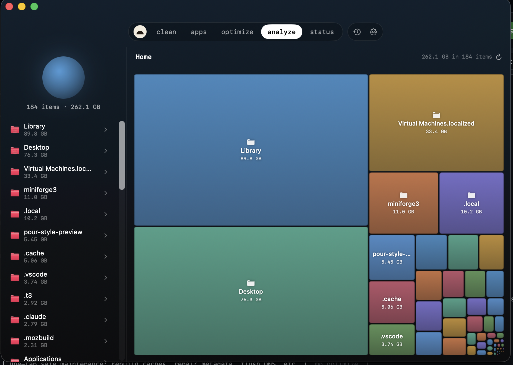

Remove junk, manage apps, run maintenance, analyze disk usage, and watch live status — in one native Mac app. Free, and open source.
Five tools plus a menu-bar HUD: Clean, Software, Optimize, Analyze, and Status, each with its own page and job — and each re-themes the whole window in its own colour.
Covers everyday jobs people split across CleanMyMac · Pearcleaner · DaisyDisk · iStat Menus · ncdu

Each tool re-themes the whole window in its own colour. The colour is not decoration — it is how the tool tells you what it is about to touch. Every one drives a single, audited mo command.
burrow_snapshot, burrow_history, burrow_top_processes — alongside a loopback HTTP API on 127.0.0.1:9277. Both local, both off until you opt in.Burrow drives the audited mo engine and adds no surveillance of its own. There is no backend — nothing to phone home to.
No analytics, telemetry, accounts or third-party SDKs. History is a local SQLite file and the MCP server is loopback-only. The one opt-in network call is brew outdated in the Updates tab.
Every action shows the file list and byte count first. You confirm; Burrow acts. Clean is categorized and sorted by what is safest to remove, and nothing is deleted on a single mis-tap.
No background root helper. When a task needs admin rights, macOS's own dialog asks you — Burrow runs that one mo command, then exits. No persistent privileged daemon.
Five tools plus the HUD, history and the MCP server — all of it, MIT-licensed. Every line is on GitHub. No trial limits, no accounts, no trade.
Burrow bundles nothing from mo — it drives the same binary you can read and run yourself. The honest trade-offs, including the admin path, are in SECURITY.md.
mo CLI?mo is the free, open-source terminal engine that does the real work. Burrow is the native Mac GUI around it — disk maps, a status dashboard, the menu-bar HUD, multi-select uninstall, one-click workflows — plus two things the CLI doesn't have: a long-range metric history and an MCP server for agents.mo engine, mole.fit is $9 and worth it. Burrow is the open-source alternative for people who want the source and the agent hooks.mo binary and bundles nothing from it. That keeps Burrow thin and means the dangerous work runs through a tool you can audit independently. brew install mole first, or Burrow refuses to launch.xattr -cr or the Homebrew cask). The honest trade-offs are in SECURITY.md.burrow_snapshot, burrow_history, burrow_top_processes, burrow_info. Point it at Burrow --mcp in ~/.claude/settings.json and an agent can answer "what's been hammering this machine?" from real data.Building from source, wiring up the MCP server, or anything else? It's all in the README.